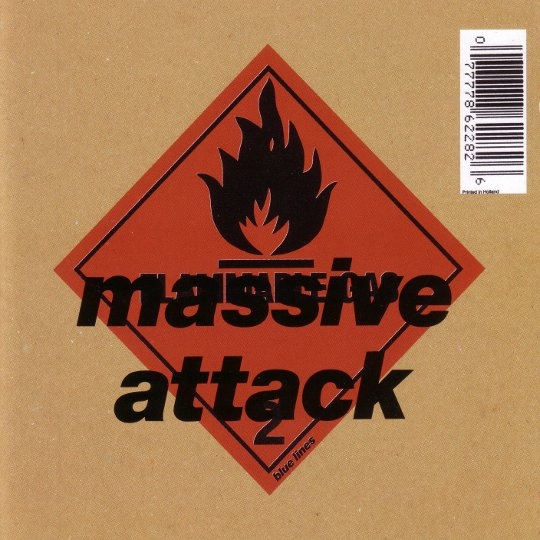
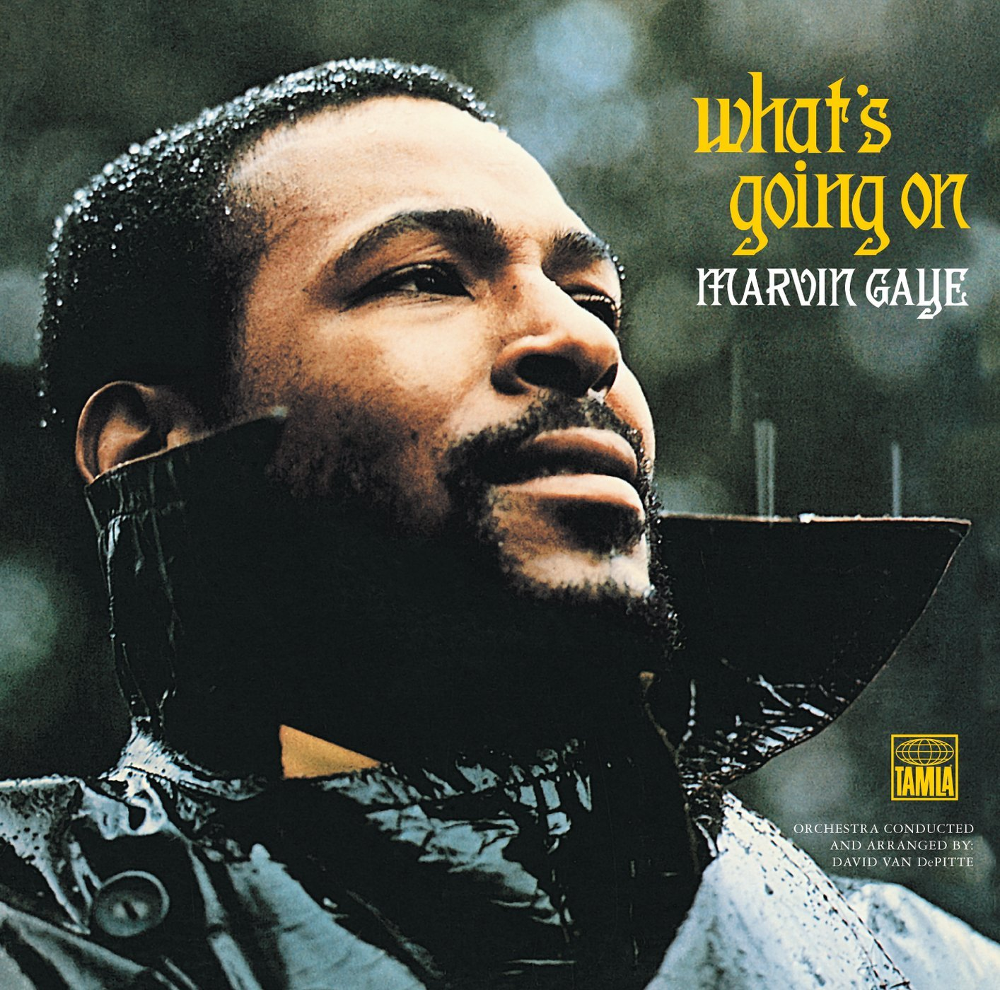

<!DOCTYPE html>
<html>
  <head>
    <meta charset="utf8"></meta>
    <!-- <link rel="stylesheet" href="https://fonts.googleapis.com/css?family=Open+Sans:400,300,700|Montserrat:400,700"> -->
    <link rel="stylesheet" href="style.css">

    <title>Clément PZ</title>
  </head>
</html>

<body>
  <div class = 'container'>
    <div class = 'card text-center' >
      
      <h1>Clément PZ</h1>
      <h2>Junior developper</h2>
      <p>Voici ma page de test en CSS skills</p>
    </div>

    <div class = 'card text-center' >
      <ul class="inline-list" >
        <li>
          <a href="#">
            <i class="fa fa-facebook"></i> Facebook
          </a>
        </li>
        <li>
          <a href="#">
            <i class="fa fa-linkedin"></i> Linkedin
          </a>
        </li>
        <li>
          <a href="#">
            <i class="fa fa-twitter"></i> Twitter
          </a>
        </li>
      </ul>
    </div>

    <div class = 'card text-center' >
      <h2>My Favorite Albums</h2>
        <table>
          <tbody>
          <tr>
            <td>
              
            </td>
            <td>
              <h3>Illmatic</h3>
              <p>- musicalité simple réduite à sa plus pure expression, portée par une dream team de beatmakers (DJ Premier, Large Professor, L.E.S., Pete Rock et Q-Tip) samplant de grands noms du jazz (Donald Byrd, Joe Chambers, The Health Brothers, Reuben Wilson...) mais aussi du funk, et du rap old school qui contribue à donner un côté shootouts à l'album.</p>
            </td>
          </tr>
          <tr>
            <td>
              
            </td>
            <td>
              <h3>Bluelines</h3>
              <p>Recette du trip-hop : - Prenez une base rythmique hip-hop - Rajoutez un simple flow rap cool ou une voix féminine douce et envoûtante - Faites parler votre imagination. N'hésitez pas à agrémenter le tout d'éléments jazz, reggae, funk, blues, rock, dub, électro, soul - Enfin pour terminer, ensoleillez ou assombrissez selon votre humeur.

              </p>
            </td>
          </tr>
          <tr>
            <td>
              
            </td>
            <td>
              <h3>What's going on</h3>
              <p>C'est quand même incroyable qu'un tel album n'ait pas encore de critique dithyrambique à son égard. 8.0 de moyenne SC, classé 6ème meilleur album de tous les temps par Rolling Stone, dotée d'une acclamation critique et d'une influence quasi-universelle, mais rien sur le site. Il est donc l'heure maintenant de lui rendre justice. 1970.</p>
            </td>
            </tr>
          </tbody>
        </table>
    </div>

    <div class = 'card text-center' >
      <h2>About this page</h2>
      This page has been coded during the <a href="http://lewagon.org/program" target="_blank">FullStack program @LeWagon</a> Great experience!
    </div>
  </div>

</body>
